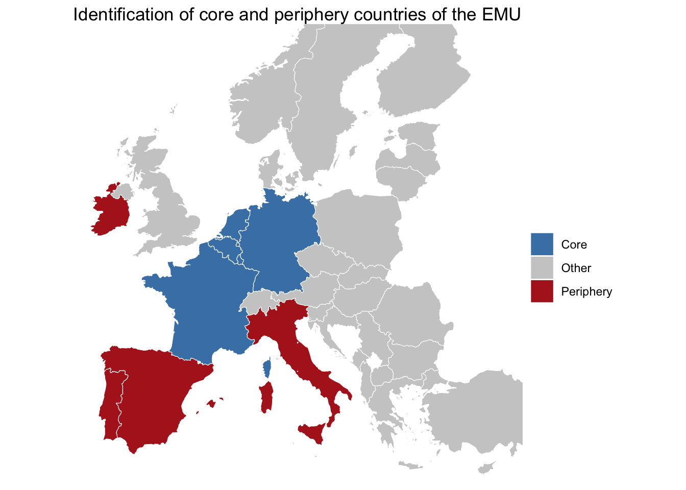
The Effect of the Asset Purchase Programme on Corporate Borrowing Rates in the EMU: A Comparative Analysis of Core and Periphery Countries
Link to the github project
Research question
How differently does quantitative easing by the ECB affect corporate borrowing costs in the eurozone ?
Since its first introduction under the Obama administration as a response to the subprime mortgage crisis of 2008-2009, quantitative easing has always been labeled as an “unconventional” policy, its actual effectiveness and associated risks debated till this day. Despite its risks, the challenges faced by the eurozone pushed the European Central Bank to adopt its own version of this monetary policy: The Asset Purchase Programme (APP). Unlike the US Federal Reserve, the ECB launched its program in 2015, years after the acute phase of the sovereign debt crisis, primarily to combat deflationary risks and, critically, to counteract the severe financial fragmentation that had developed between core and peripheral member states (an important example would be Greece and Germany).
There is ample research surrounding quantitative easing, much of which focuses on Europe, examining the impact on sovereign bond yields, stock market behavior, and the overall macroeconomic aggregates like inflation and GDP growth. However, we observe fairly little research on the private sector that extends beyond the financial market - specifically, there isn’t a great amount of research on the direct effect of quantitative easing on corporations’ day-to-day operations. This is an important question because one of the fundamental functions of any monetary policy is, after all, to regulate economic development to ensure a healthy, efficient economy, and the operations of private enterprises are the driving force of the economy. Therefore, we would like to investigate the effect of quantitative easing on one key aspect of the private sector: the funding of corporations. In addition, from the existing literature, we were able to discover interesting studies focusing on country-level effects of the APP. Such research allowed us to realize that, even though the economic chasm between certain countries of Europe, highlighted by the Greek debt crisis of 2010, was what pushed the ECB to adopt quantitative easing, that same chasm would also produce unexpected effects of quantitative easing.
Therefore, we propose the following research question:
How does quantitative easing by the ECB affect corporate borrowing costs in the eurozone (the European Monetary Union), and how different is this impact across different members of the EMU?
This inquiry investigates both the transmission of unconventional monetary policy and the asymmetry of this transmission. The goal is to move beyond the study of the eurozone as a monolith, to examine its fragmentation, and how that fragmentation complicates decisions made by a central, unifying authority like the ECB.
After loading and cleaning the data, we proceed with the empirical analysis as follows. First, we classify the countries of the monetary union into groups of core and periphery countries, in line with the existing literature. Second, we visualize the evolution of the cost of borrowing at the national level and conduct a cross-country analysis to identify common patterns and divergences in the borrowing conditions. Finally, we estimate econometric models to assess whether there exists a significant relationship between asset purchases and the cost of borrowing, and if there is a difference in the coefficient between core and periphery. We also conduct a time series analysis with help of an ARMA model and impulse response functions.
Data loading and cleaning
Link to the sources
To limit our research only to countries directly regulated by the European Central Bank, we have selected data only from the EMU.
- Quantitative Easing data : We are using the csv file “APP_breakdown_history” (click on the link “History of cumulative purchase breakdowns under the APP”) downloaded from the webpage dedicated to the Asset Purchase Programme : https://www.ecb.europa.eu/mopo/implement/app/html/index.en.html).
For all other datasets of the ECB Data Portal, we browsed the series name through the the search engine, select the option “All MU countries (20)” in the “Geographical areas”, “select all”, and download as csv files that contains all countries times series.
Cost of borrowing for corporations , Euro area, Monthly https://data.ecb.europa.eu/search-results?searchTerm=Cost%20of%20borrowing%20for%20corporations
HICP - Overall index, Euro area, Monthly https://data.ecb.europa.eu/search-results?searchTerm=HICP%20-%20Overall%20index%2C%20Euro%20area%2C%20Monthly
Euribor 3-month - Historical close, average of observations through period, Euro area, Monthly https://data.ecb.europa.eu/data/datasets/FM/FM.M.U2.EUR.RT.MM.EURIBOR3MD\_.HSTA
Euribor 6-month - Historical close, average of observations through period, Euro area, Monthly https://data.ecb.europa.eu/data/datasets/FM/FM.M.U2.EUR.RT.MM.EURIBOR6MD\_.HSTA
Long-term interest rate for convergence purposes – 10-year maturity – denominated in euro – Euro area 20 (fixed composition) https://data.ecb.europa.eu/search-results?searchTerm=Long-term%20interest%20rate%20for%20convergence%20purposes%20%E2%80%93%2010-year%20maturity%20%E2%80%93%20denominated%20in%20euro
The ECB Data Portal https://data.ecb.europa.eu/ is the European Central Bank’s online delivery service for statistical data and related metadata and publications.
Description of the sources
Quantitative Easing variables : the Asset Purchase Programme (2014)
- Quantitative Easing (QE) Shocks (Source: APP_breakdown_history.csv from the ECB website): The monthly net amount in euro millions of ECB asset purchases. This dataset provides the breakdown of net purchases under the Asset Purchase Programme (APP) - the ECB’s quantitative easing programme - covering the period 2014–2025. We focus on the first four columns of the dataset, which report monthly net purchases at book value for each of the four components of the APP, which are the corporate sector purchase programme (CSPP), the public sector purchase programme (PSPP), the asset-backed securities purchase programme (ABSPP) and the third covered bond purchase programme (CBPP3).
Target variable : Corporate borrowing rates
- Corporate borrowing rates (Source: ECB data portal) : This is the weighted average annual interest rates of new loans for non-financial corporations in each country of the euro area.
Other variables
Harmonised Index of Consumer Prices (HICP) (Source: ECB data portal). The HICP allows the calculation of inflation in each country and is highly related to the ECB’s decisions on monetary policy.
Short term rates : Euribor 3-month & 6-month - Historical close, average of observations through period, Euro area, Monthly (Source: ECB data portal). Euribor is determined by the ECB’s monetary policy. These values are the average interest rates in the interbank market, and serve as a benchmark for interest rates to all non-financial agents (therefore more general than the corporate borrowing rate, our target variable). These nominal rates are common across all Euro area.
Long-term interest rate – 10-year maturity – denominated in euro – Euro area 20 (Source: ECB data portal). This variable represents the yield on government bonds and is related to long-term financing conditions.
Data Loading & Data Cleaning
Quantitative Easing variable : the Asset Purchase Programme (2014)
Load Data: Historical data of asset puchases by the ECB & Data cleaning
Data cleaning: Remove useless data & Adding dates & Converting variables to proper formats
| Before cleaning | After cleaning | |
|---|---|---|
| Number of columns | 14 | 8 |
| Number of rows | 139 | 134 |
| Number of NAs | 174 | 0 |
Target variable : corporate borrowing rates
Each data file downloaded from the ECB Data Portal is loaded and cleaned as follows:
We start by loading the dataset from our data folder, and computing the original number of rows and columns. We use the function spec() with the col_types() argument to preserve the date format for DATE, and the numeric type for variables that are incorrectly recognized as logical.
Two columns are for the date : DATE as a date,TIME PERIOD as a character. The others are the values for the twenty countries of the Euro Union. Each of these column corresponds to a full ECB series name, for example: Financial account, Direct Investment, Net (BPS.M.N.IE.W1.S1.S1.T.N.FA.D.F5._Z.EUR._T._X.N.ALL). We rename each column by extracting the two letter country code from the series name, using the function ifelse.
Next, we select all columns except TIME PERIOD (we will use DATE for joining). We also filter the observations from October 2014 to November 2025.
Finally, we transform the dataset from wide format (months as rows, countries as columns) to long format (months and countries as rows), and left join to the full data dataset.
| Before cleaning | After cleaning | |
|---|---|---|
| Number of columns | 23 | 3 |
| Number of rows | 277 | 2772 |
| Number of NAs | 800 | 102 |
The remaining NAs originate from missing data for Hungary (HR) and three missing observations for Lithuania (LT). We will eventually remove this country’s values from the analysis.
Harmonised index of consumer prices (HICP)
6 months maturity
| Before cleaning | After cleaning | |
|---|---|---|
| Number of columns | 22 | 3 |
| Number of rows | 359 | 2680 |
| Number of NAs | 83 | 0 |
Short term interest rates
These two nominal rates (maturity 3 and 6 month) are common across all euro area countries and are set by the ECB. We will then compute the real interest rate for each country.
3 months maturity
| Before cleaning | After cleaning | |
|---|---|---|
| Number of columns | 3 | 2 |
| Number of rows | 383 | 134 |
| Number of NAs | 0 | 0 |
There are less rows after cleaning because of all the dates removed.
6 months maturity
| Before cleaning | After cleaning | |
|---|---|---|
| Number of columns | 3 | 2 |
| Number of rows | 383 | 134 |
| Number of NAs | 0 | 0 |
Long term interest rate
We import the long term interest rate for 10 years maturity. As well as the columns “Date”, “Time Period” and the country values, there are two aggregates of code I9 (Euro area 20 (fixed composition) as of 1 January 2023) and U2 (Euro area changing composition), hence 24 columns.
| Before cleaning | After cleaning | |
|---|---|---|
| Number of columns | 24 | 3 |
| Number of rows | 478 | 2793 |
| Number of NAs | 2709 | 69 |
We still observe many NAs because Estonia is included, and its data only start in 2020.
We clean the environment before the analysis.
Analysis
Framework and visualisations
Core and periphery countries, a distinction from literature
The identification of core and periphery countries is a crucial step in our analysis. The development of the Optimum Currency Area (OCA) theory in the 1960s suggest that core countries are better suited to a monetary union due to greater economic convergence. Following the creation of EMU, Bayoumi and Eichengreen (1993) identify core countries as those exhibiting a higher degree of synchronization in demand and supply shocks and update the classification1 .
In this study, we adopt the distinction proposed by Wächter et al. (2024)2. Their paper identifies 10 euro area countries as belonging to either core or periphery groups based on countries Taylor Rate Gaps (TRGAPs), defined as the deviation of the country-specific Taylor, or ideal, interest rate from the ECB policy rate.
Therefore, the five core countries are Belgium, France, Germany, Luxembourg and the Netherlands (Denmark was included but it is not part of the EMU). The group of periphery countries consists of Greece, Ireland, Italy, Portugal, and Spain.
We then construct country vectors and include a qualitative group variable (“Core,” “Periphery,” “Other”) in the dataset. We illustrate this distinction using a map of Europe generated with the eurostat package, where core countries are highlighted in blue and periphery countries in red3.
(Note that the latest version of R is required to load the eurostat package and visualise the map. Adding #| eval=FALSE to the following code chunk allows the rendering with earlier versions.)
The Asset Purchase Programme
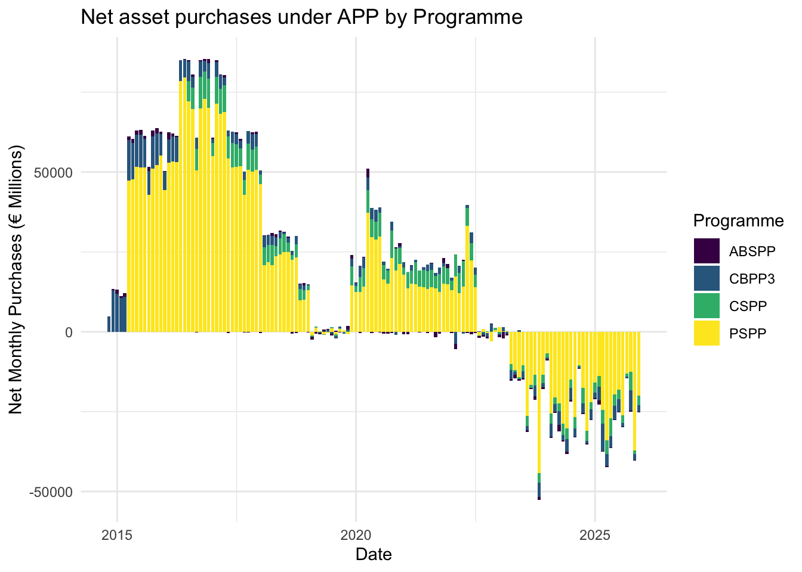
The Asset Purchase Programme was initiated in mid 2014 to support the ECB’s 2% objective after the sovereign debt crisis of 2010. Overall, net purchases continued until 2019. In 2020, the Covid-19 pandemic encouraged the ECB to maintain large-scale asset purchase. Net purchases ended in July 2022 and assets were sold (“quantitative tightening”), with a reduction of approximately €15 billion per month between March and June 2023.
Regarding the different programmes of the APP, the ECB first expanded two existing programmes, the ABSPP (Asset-backed Securities Purchase Programme) and the CBPP3 (Covered Bond Purchase Programme 3). In March 2015 was introduced the PSPP (Public Sector Purchase Programme), which involved large-scale purchases of government and other public sector bonds. As we see with the yellow bars, this component quickly became the dominant programme of the APP, peaking in May 2016 at approximately €79,673 million. When the trend reversed, the PSPP also accounted for the largest share of net asset sales. The CSPP (Corporate Sector Purchase Programme), launched in June 2016, also became an important part to total APP purchases.
Cost of borrowing : trends and differences
Some descriptive statistics
| Group | n | mean | median | sd | min | max |
|---|---|---|---|---|---|---|
| Core | 660 | 2.231409 | 1.61 | 1.245947 | 0.71 | 5.56 |
| Other | 1320 | 3.306166 | 3.08 | 1.397727 | 0.86 | 7.20 |
| Periphery | 660 | 3.292758 | 3.04 | 1.361712 | 1.23 | 6.44 |
The descriptive statistics show heterogeneity in corporate borrowing costs across country groups. Core countries have lower mean and median interest rates, 2.23% and 1.61% respectfully. In contrast, both periphery and other countries face higher borrowing costs, 3.29% and 3.31% in average. In addition, borrowing rates in periphery countries show greater dispersion, with slightly larger standard deviations.
These results are consistent with our predictions. They suggest that firms in core countries benefit more from lower interest rates than firms in periphery, despite a common monetary policy. However, they question the relevance of the classification of periphery countries, as they do not differ clearly from the unlabeled ones (they even show a lower average cost).
Trend comparison
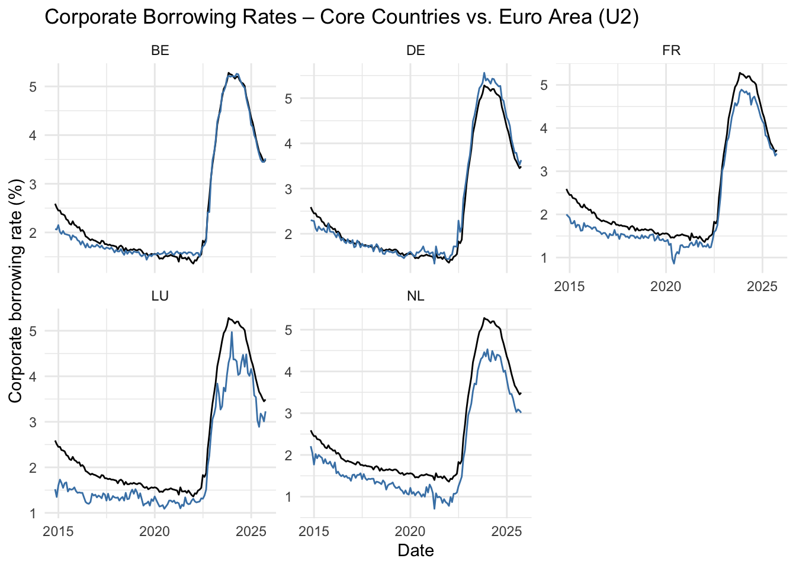
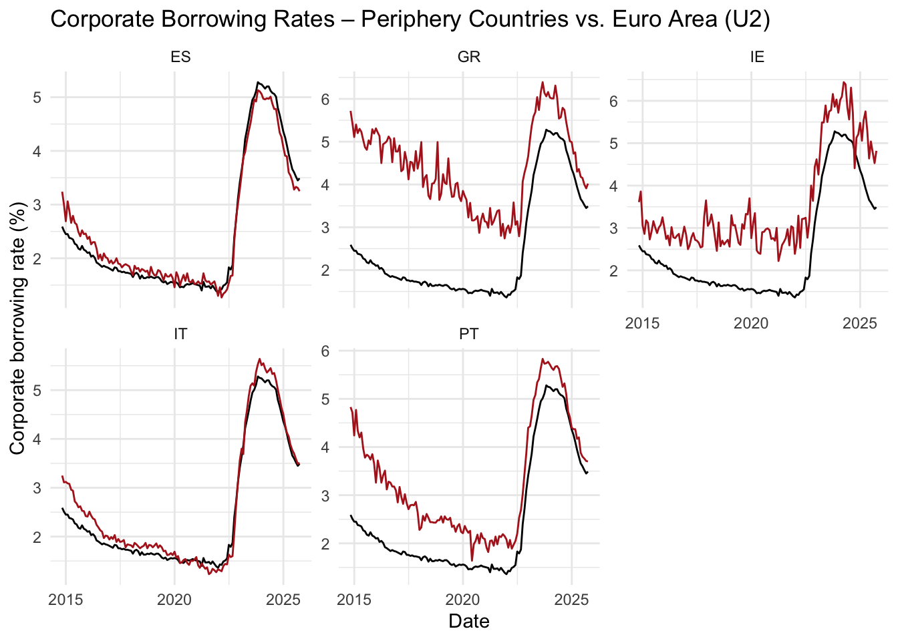
First, let us look at the aggregate level. The black line represents the corporate interest rate over time. It shows a continuous decline from 2.59% in October 2014 to 1.36% in December 2021. Following quantitative tightening in 2022, financing costs increased sharply, reaching a peak of 5.28% in October 2023, before declining.
We then compare the two country groups. For core countries, borrowing costs are generally close to, or slightly below, the EMU average. By contrast, periphery countries exhibit higher borrowing costs, in particular Greece, Ireland, and Portugal prior to tighter policy in 2022. However, Italy, Spain, Belgium, and Germany do not notably differ from the EMU average.
Models
Selection of the lag
We aim to estimate the effect of QE on the corporate cost of borrowing. To identify the most appropriate specification, we conduct regressions using QE shocks and their lagged values at the aggregate level.
| Model | AIC | BIC | |
|---|---|---|---|
| lag0 | lag0 | 361.502 | 370.151 |
| lag1 | lag1 | 359.387 | 368.012 |
| lag2 | lag2 | 357.709 | 366.311 |
| lag3 | lag3 | 356.494 | 365.074 |
| lag4 | lag4 | 356.687 | 365.243 |
| lag5 | lag5 | 357.615 | 366.148 |
| lag6 | lag6 | 358.213 | 366.722 |
| lag7 | lag7 | 358.913 | 367.398 |
| lag8 | lag8 | 359.531 | 367.992 |
| lag9 | lag9 | 360.431 | 368.867 |
| lag10 | lag10 | 361.582 | 369.994 |
The model with a three-month lag minimizes both the AIC and BIC criteria.
An overview of causal inference
There exists a large literature arguing that the ECB’s “one-size-fits-all” quantitative easing policy had differentiated effect on economic variables across countries. In particular, we expect the coefficients capturing the effects of QE to be lower and less statistically significant for core countries than for periphery countries. In fact, average cost of borrowing rises less quickly in euro area countries where debt is contracted at a fixed rate and a long maturity, as is the case in France or other core countries (Gueuder and Ray (2023)4.
Let’s confront literature to our data.
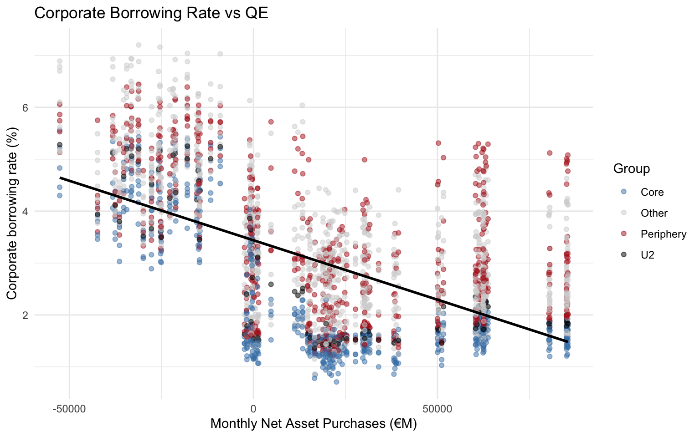
There is an negative slope at the EMU level, represented by the black dots and the OLS regression line. This suggests that higher QE intensity may reduce corporate borrowing costs. Core countries tend to lie below the fitted line while periphery countries are above it.
However, the relationship lacks a clear structure, which makes the interpretation difficult. The Pearson correlation is far from -1 (\(\rho\) = -0.5639383).
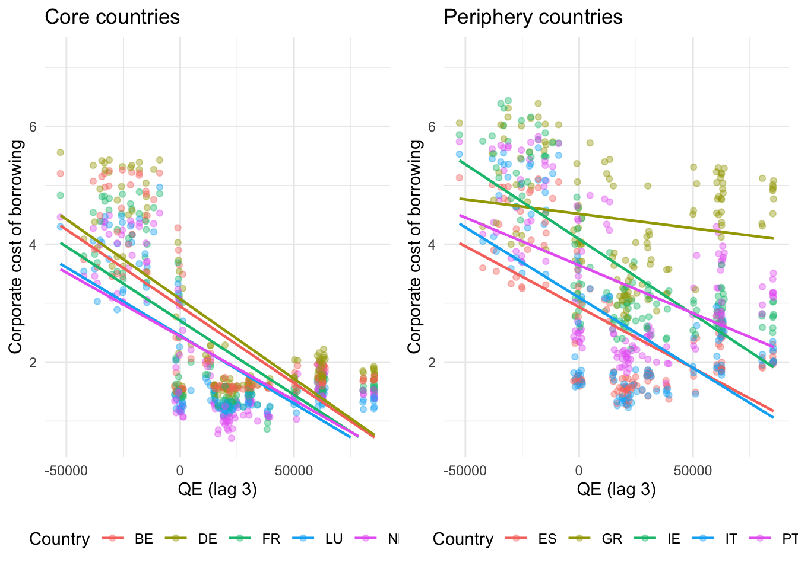
At the country and group level, we see that the slope is relatively homogeneous across core countries, indicating that there might be a stable relationship. For periphery countries, the relationship is more dispersed, especially for the Greek slope. However, the steeper slope observed for core countries appears to contradict the literature, which predicts a weaker response of corporate borrowing costs to quantitative easing in core economies.
Causal inference
A simple regression
We start with a very simple model : \[\text{Cost of borrowing}_t = \beta_0 + \beta_1 \text{Monthly QE}_{t-3} + \epsilon_t \]
Taking into account the nature of panel data and for simplicity, we make regressions on time series per country of the selected groups, and asses whether there is a difference between the coefficients \(\beta_1\).
| Country | estimate | std.error | p.value | r2 | signif |
|---|---|---|---|---|---|
| BE | -2.60332e-05 | 2.2812e-06 | 0 | 0.5023833 | *** |
| DE | -2.70384e-05 | 2.4192e-06 | 0 | 0.4900309 | *** |
| FR | -2.51436e-05 | 2.1697e-06 | 0 | 0.5081165 | *** |
| LU | -2.31026e-05 | 1.9385e-06 | 0 | 0.5221089 | *** |
| NL | -2.16471e-05 | 2.1768e-06 | 0 | 0.4320471 | *** |
| Country | estimate | std.error | p.value | r2 | signif |
|---|---|---|---|---|---|
| ES | -2.06520e-05 | 2.2666e-06 | 0.0000000000 | 0.38971377 | *** |
| GR | -4.90220e-06 | 2.3608e-06 | 0.0398156483 | 0.03210385 | ** |
| IE | -2.54301e-05 | 1.9751e-06 | 0.0000000000 | 0.56047991 | *** |
| IT | -2.38498e-05 | 2.6187e-06 | 0.0000000000 | 0.38951187 | *** |
| PT | -1.62275e-05 | 2.6554e-06 | 0.0000000107 | 0.22317111 | *** |
However, we find no evidence of such a difference, with an average of \(\beta_1\) = -2.4592997^{-5} for core countries and \(\beta_1\) = -1.8212302^{-5} for peripheral countries, despite a 5% significance of QE for all models. We also note that coefficients are very small, and that the R2 is only of 3% for the case of Greece.
Adding control variables
Let us see whether adding control variables improves the robustness of the model. These controls include the price index, short-term interest rates, and long-term interest rates. \[\text{Cost of borrowing}_t = \beta_0 + \beta_1 \text{Monthly QE}_{t-3} + \beta_2 \text{HICP}_t + \beta_3 \text{3M rate}_t + \beta_3 \text{10Y rate}_t + \epsilon_t \] We take into account the sign of \(\beta_1\), which is expected to be negative, its significance and the R2 of the model.
| Country | estimate | std.error | p.value | r2 | signif |
|---|---|---|---|---|---|
| BE | 7.9530e-07 | 3.713e-07 | 0.0341214663 | 0.9940528 | ** |
| DE | 1.4262e-06 | 4.374e-07 | 0.0014286822 | 0.9925955 | *** |
| FR | -1.3600e-08 | 4.432e-07 | 0.9755016147 | 0.9908292 | |
| LU | -7.6400e-07 | 7.328e-07 | 0.2991214336 | 0.9717459 | |
| NL | 1.8537e-06 | 5.202e-07 | 0.0005163512 | 0.9869817 | *** |
| Country | estimate | std.error | p.value | r2 | signif |
|---|---|---|---|---|---|
| ES | 2.3982e-06 | 8.3550e-07 | 0.0048067641 | 0.9698769 | *** |
| GR | 3.2295e-06 | 1.8802e-06 | 0.0883263671 | 0.8472842 | * |
| IE | -3.9654e-06 | 1.1890e-06 | 0.0011179342 | 0.9327815 | *** |
| IT | 5.2087e-06 | 9.6670e-07 | 0.0000003331 | 0.9623619 | *** |
| PT | 3.7110e-06 | 2.0736e-06 | 0.0758957492 | 0.8806571 | * |
Despite a higher R2, this model is not much more convincing as most estimates of \(\beta_1\) become positive and less significant. Several factors may explain this result. First, the absence of lagged variables may lead to misspecification. The inclusion of the price index may also introduce endogeneity with respect to QE, as central banks calibrate asset purchases in response to inflation.
VAR Analysis
In our previous section, we have seen that the simple LM yielded very small coefficients. Given that the impact of quantitative easing shocks may be felt across multiple time horizons, we decided that a static model may be insufficient.
Therefore, in this part, we will to examine the the dynamic reactions of interest rates towards quantitative easing by conducting a VAR analysis and obtaining the Impulse Response Functions of the countries of interest.
The general form of a VAR is as follows:
\[ Y_t = c + \Phi^1Y_{t-1}+\Phi^2Y_{t-2}+\dots+{\Phi}^pY_{t-p}+\epsilon_t \]
The Impulse Response Function is defined as the reaction of Y towards a one-unit shock in the structural error term, its formula is:
\[ IRF(s) = \frac{\partial y_{t+s}}{\partial \epsilon_t} = \Psi_s \]
In our scenario, the IRF would reflect the response of corporate interest rates towards a structural shock in quantitative easing policy.
In order to ensure the stability of our VAR’s, we built a time series for each country using the first differences in each variable.
First, we would like to look at IRF’s of individual countries. Therefore, we selected 4 representative countries: France, Germany, Italy, and Spain. We can see in the results that, while there are visible effects for France and Germany, the responses of Italy and Spain seem to be highly volatile (as can be seen via the red dashed lines that represent the confidence intervals)
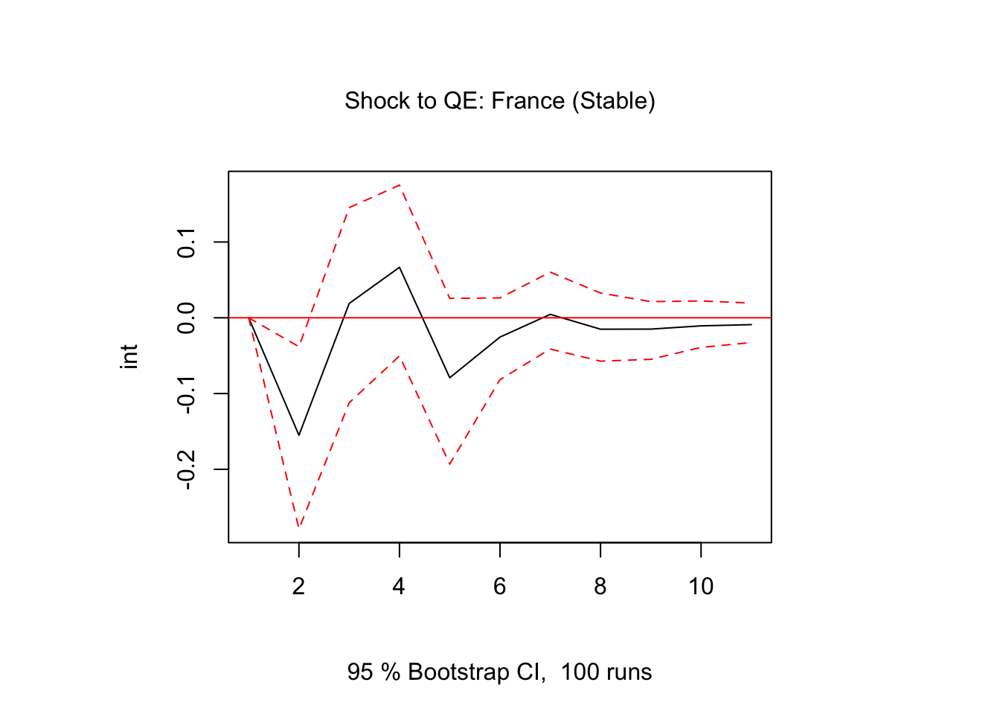
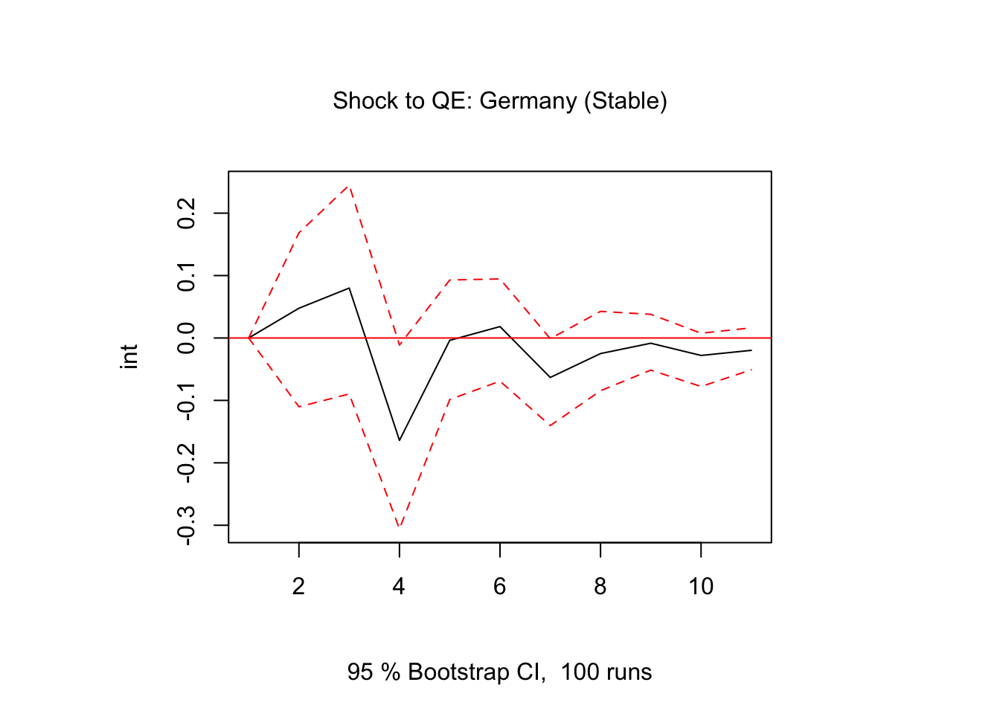
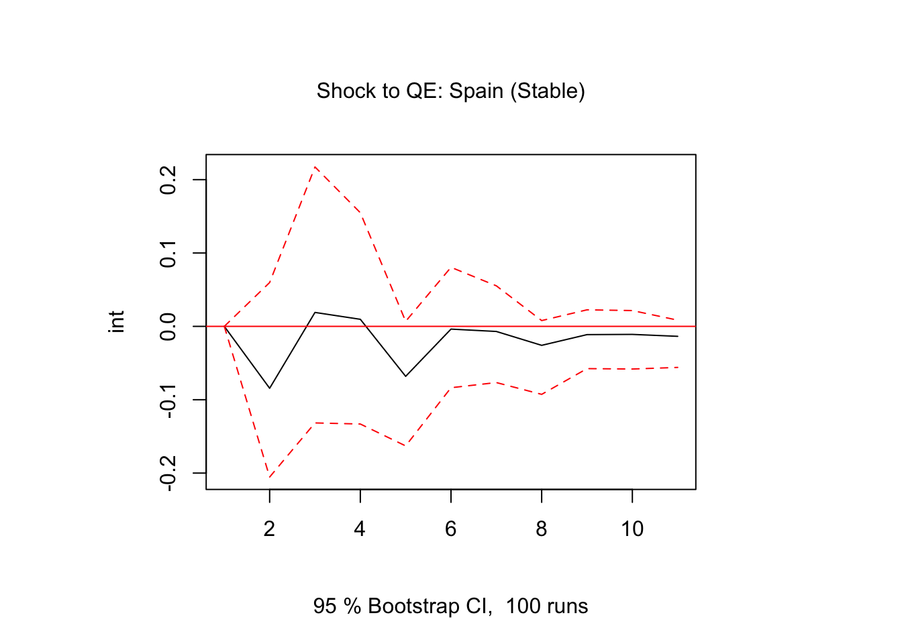
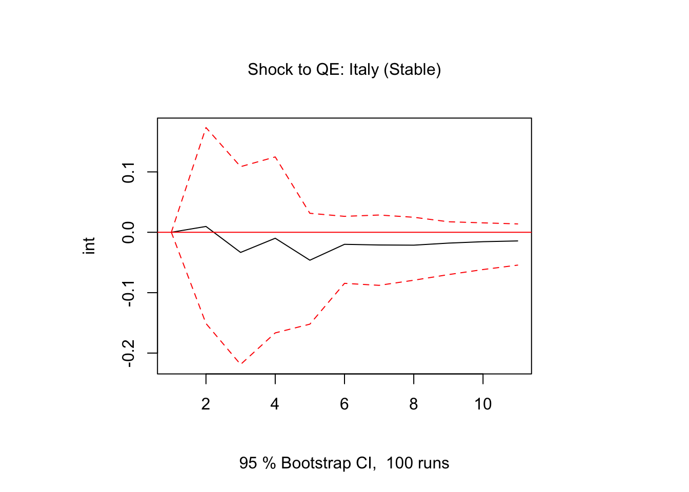
Second, we created an aggregate visualization for core and peripheral countries. For core countries, a positive shock in quantitative easing policy leads to a positive reaction in interest rates around one month after the shock. Then, during subsequent periods, there are slight negative responses before interest rates finally stabilize. For peripheral countries, there is a large dip in corporate interest rates two months after the shock, with a rebound the following month, signifying greater volatility.
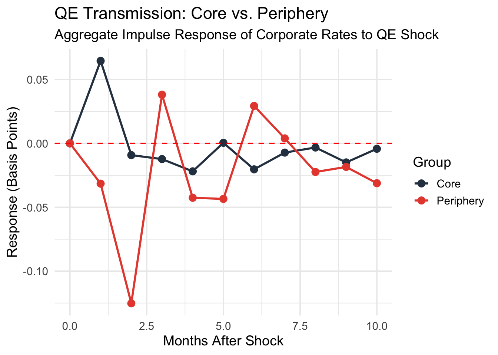
The findings suggest that the transmission of quantitative easing shocks is fundamentally asymmetric. In core countries like Germany and France, the immediate positive interest rate response likely reflects a signaling channel, where aggressive policy interventions lead to higher growth and inflation expectations, thus raising interest rates in the short term. Conversely, for peripheral countries such as Italy and Spain, policy impacts are probably filtered through more fragile banking systems and fluctuating sovereign risk perceptions.
Conclusion
This study investigated the transmission of unconventional monetary policy (quantitative easing) by the European Central Bank across different eurozone countries and highlighted the heterogeneity in the corporate interest rate responses of different countries. Notably, referring to current literature, we focused on two subgroups of countries: The “core” member states of the EU, who generally have synchronized economic cycles and closer “ideal” interest rates to the EU target, and the “periphery” member states, whose “ideal” rates deviate from the ECB policy. The distinction between these two subgroups is essential for identifying potential misfits in EU-wide monetary policy.
Our findings, however, illustrate that the impact of monetary policy on corporate interest rates is not straightforward for both core and periphery member states.
Using a static OLS regression, we obtained some unexpected positive signs and extremely small coefficients from countries of both groups, which is not improved by introducing control variables. This highlights that the effect of quantitative easing may not be a one-time effect, warranting a dynamic model. Through our VAR analysis, we have seen that, in aggregate, interest rates in core countries have a delayed positive response towards a structural shock and quickly stabilize. Interest rates in periphery countries, however, have a more violent and volatile response with peaks across multiple periods..
Thus, the findings illustrate that there is significant asymmetry in the direction and volatility of the responses of corporate interest rates in core and periphery countries, reflecting that the different economic structures and stabilities of these two country groups lead different mechanisms to be at play when quantitative easing shocks are felt. We can affirm that the financial fragmentation within the EMU should be addressed by country-level action. Overall, the pass-through of quantitative easing to interest rates for the private corporate sector is weak. To further examine the effect of quantitative easing on corporate interest rates, future studies could build upon our model by using culmulative measures of quantitative easing rather than monthly amounts.
Footnotes
Nauro F. Campos, Corrado Macchiarelli, Core and Periphery in the European Monetary Union: Bayoumi and Eichengreen 25 years later, Economics Letters, LSE, Volume 147, 2016↩︎
Wächter, Maybrit; Proano, Christian; Peña, Juan Carlos : How fitting is “one-size-fits-all”? Revisiting the dynamic effects of ECB’s interest policy on euro area countries, BERG Working Paper Series, No. 199, 2024↩︎
https://stavrakoudis.econ.uoi.gr/r-eurostat/drawing-maps-of-europe.html#regions-of-europe↩︎
Debt structure and rising interest rates: focus on European companies, Maxime Gueuder, Sébastien Ray, Banque de France, 2024↩︎